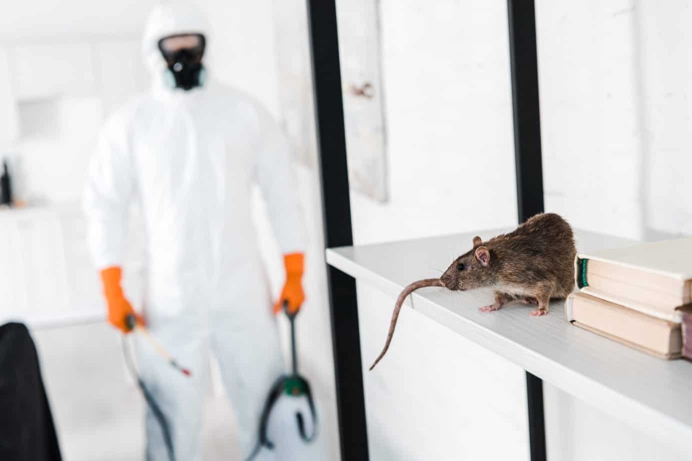
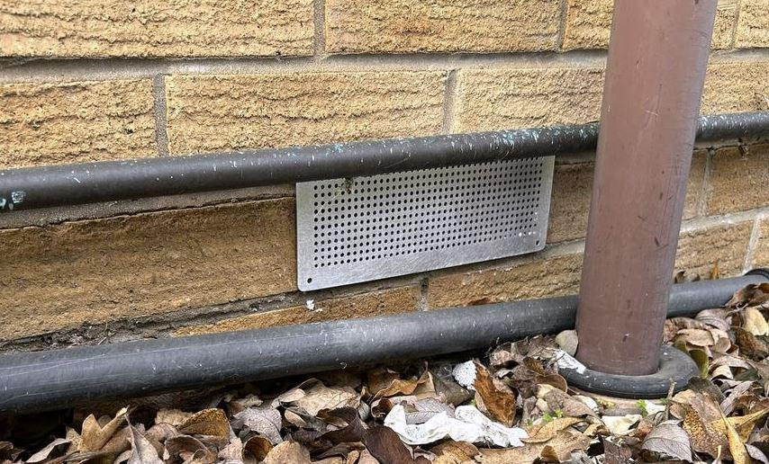
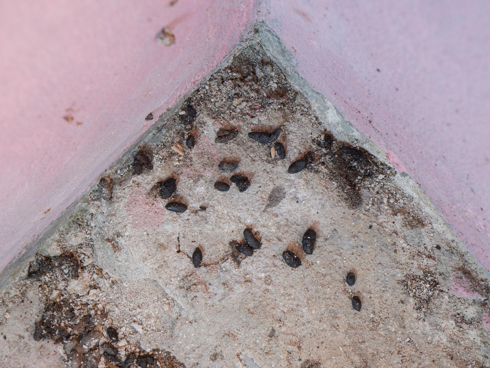
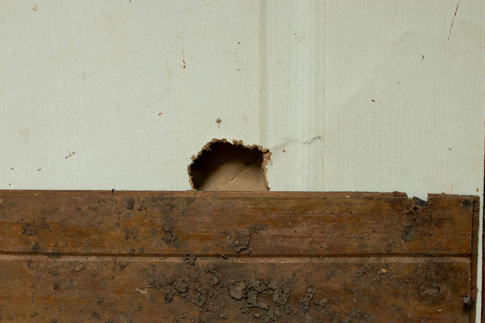

Professional elimination of rats, mice and squirrels for homes, businesses and farms. We locate entry points, deploy targeted treatments and seal properties permanently.
At MPN Holdings Rodent Control, we provide reliable and effective solutions to eliminate and prevent rodent infestations. Our team specializes in controlling pests such as rats, mice and squirrels using safe, modern, and environmentally responsible methods.
Rodents are mammals — most commonly rats, mice and squirrels — characterised by continuously growing sharp incisors used for gnawing. They cause structural damage, contaminate food supplies and carry serious diseases including leptospirosis and salmonella. A rodent infestation will not resolve itself without professional intervention.
Rodents reproduce rapidly and often nest in hidden areas such as roof spaces, wall voids and under floorboards, so DIY solutions may only provide temporary relief. Our professional rodent exterminators can help eliminate infestations and prevent future problems.
With MPN Holdings rodent control, homeowners get expert service backed by proven methods and experienced technicians who understand rodent behaviour and entry patterns.

How We Treat Rodents
We select the most appropriate treatment method based on the rodent species, severity of the infestation and the type of property. Below are the three primary methods we use.
Baiting Stations
Best for: Quick elimination of active rat and mouse infestations
Tamper-resistant bait stations are placed at strategic locations along rodent runways and near entry points. The bait is species-specific and designed to eliminate the colony within days while remaining safe for non-target animals and children.
Mechanical Trapping
Best for: Chemical-free control in sensitive environments
Mechanical traps are deployed in areas where bait cannot be safely used, such as food preparation areas, homes with young children or properties near water sources. Traps are checked and reset on scheduled visits until all activity ceases.
Exclusion and Proofing
Best for: Permanent prevention of re-entry
After eliminating the active infestation we seal all identified entry points using steel mesh, rodent-proof sealant and physical barriers. This is the most important step in ensuring rodents cannot return to the property.

Top 3 Signs of a Rodent Infestation
Droppings Near Food or Along Walls
Rodent droppings are typically dark, pellet-shaped and found near food sources, inside cupboards, along skirting boards or behind appliances. Fresh droppings are soft and dark; older ones are dry and grey.

Gnaw Marks on Cables, Wood or Packaging
Rodents gnaw continuously to keep their incisors short. Chewed electrical cables, wooden beams, food packaging and pipe insulation are strong indicators of an active infestation.

Scratching Sounds at Night
Rodents are mostly nocturnal. Scratching, scurrying or squeaking sounds coming from walls, ceilings or under floors during the night are a common early warning sign of rodents nesting inside the property.